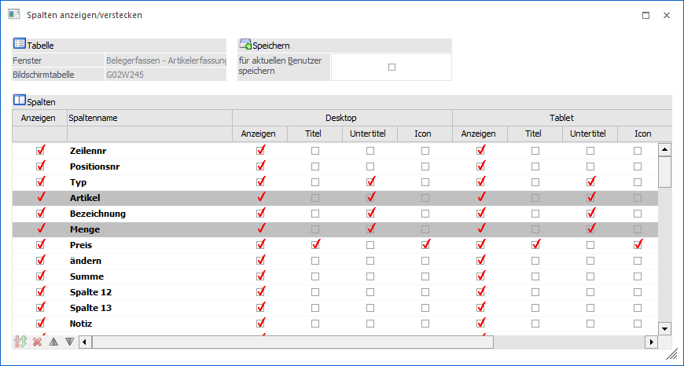
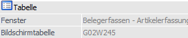
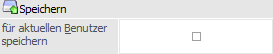
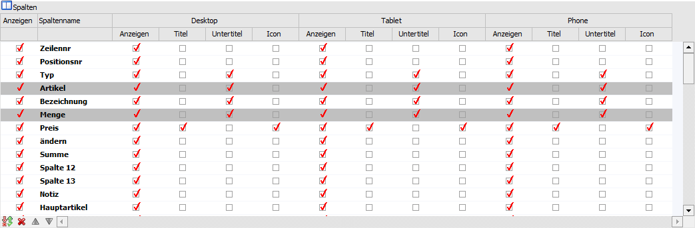
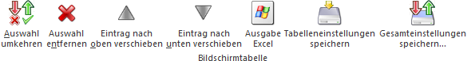

Bei vielen Tabellen (z.B. Belegerfassungstabelle oder Ergebnisstabelle des Artikelmatchcodes) können Spalten versteckt bzw. weitere Spalten angezeigt, die Spaltenposition verändert, sowie definiert werden, wie eine Tabelle in der kompakten Darstellung der WinLine mobile angezeigt werden soll.
Hinweis
Nähere Informationen zu Tabellen in der WinLine mobile entnehmen Sie bitte dem Kapitel Exkurs - Tabellendefinition in der WinLine mobile.

Tabelle

Ø Fenster
An dieser Stelle wird der Name des Fensters angezeigt, in welchem sich die Tabelle befindet.
Ø Bildschirmtabelle
In diesem Feld wird der Name der Tabelle dargestellt, für welche Anpassungen vorgenommen werden sollen.
Speichern

Ø für aktuellen Benutzer speichern
Wenn die Option "für aktuellen Benutzer speichern" aktiviert wurde, dann werden die gewählten Einstellungen bei Anwahl des Buttons "Ok" bzw. der Taste F5 benutzerspezifisch gespeichert.
Tabelle "Spalten"

In der Tabelle werden alle Spalten der Bildschirmtabelle dargestellt. Handelt es sich um eine Muss-Spalte, so weist diese eine graue Hinterlegung auf. Für die Darstellung Desktop / Tablet / Phone kann jeweils definiert werden, welche Informationen als Titel, Untertitel und Icon in der WinLine mobile dargestellt werden sollen.
Ø Anzeigen
Bei Anwahl dieser Option werden alle Checkboxen der Zeile deaktiviert.
Ø Spaltenname
An dieser Stelle wird der Name der Spalte dargestellt.
Ø Spalten "Desktop / Tablet / Phone"
Per Checkbox kann definiert werden, welche Spalten auf welchem Gerät angezeigt werden sollen.
ü Anzeigen
Die Spalte wird in der
Tabelle angezeigt.
ü Titel / Untertitel / Icon
Mit
Hilfe dieser Spalten kann das Layout der kompakten Tabellenansicht in der
WinLine mobile definiert werden (nähere Informationen entnehmen Sie bitte dem
Kapitel Exkurs - Tabellendefinition in
der WinLine mobile).
Hinweis
Deaktivierte Spalten des Typs "Desktop" werden in der WinLine mobile grundsätzlich nicht angezeigt.
Tabellenbuttons

Ø Auswahl umkehren
Durch Anklicken des Buttons "Auswahl umkehren" werden die Checkboxen der Spalte, auf welcher der Fokus liegt, in das Gegenteil gekehrt.
Ø Auswahl entfernen
Durch Anwahl des Buttons "Auswahl entfernen" werden die Checkboxen der Spalte, auf welcher der Fokus liegt, deaktiviert.
Ø Eintrag nach oben verschieben
Durch Anwahl dieses Buttons wird die markierte Zeile nach oben geschoben.
Hinweis
Spalten können auch per Drag & Drop verschoben werden.
Ø Eintrag nach unten verschieben
Durch Anwahl dieses Buttons wird die markierte Zeile nach unten geschoben.
Hinweis
Spalten können auch per Drag & Drop verschoben werden.
Ø Ausgabe Excel
Durch Anwahl des Buttons "Ausgabe Excel" wird der Inhalt der Tabelle an Microsoft Excel übergeben.
Ø Tabelleneinstellungen speichern
Die Spalten einer Tabelle können grundsätzlich an beliebige Positionen verschoben, bzw. in der Breite entsprechend angepasst werden. Durch Anwahl des Buttons "Tabelleneinstellungen speichern" werden die Einstellungen benutzerspezifisch gespeichert und bei dem nächsten Aufruf des Programmpunktes wieder vorgeschlagen.
Ø Gesamteinstellungen speichern
Im Gegensatz zu "Tabelleneinstellungen speichern" können mit "Gesamteinstellungen speichern" mehrere Tabellenaufbauten gespeichert und nach Wunsch geladen werden. Zusätzlich werden Sonderfunktionen der Tabelle (z.B. "Spalte gruppieren") ebenfalls bei der Speicherung bedacht.
Buttons

Ø Ok
Durch Anwahl des Buttons "Ok" bzw. der Taste F5 werden die Einstellungen gespeichert.
Hinweis
Ob die Speicherung temporär oder dauerhaft vorgenommen wird, ist von der Option "für aktuellen Benutzer speichern" abhängig.
Ø Ende
Bei Anwahl des Buttons "Ende" bzw. der Taste ESC wird das Fenster geschlossen und alle nicht gespeicherten Änderungen verworfen.